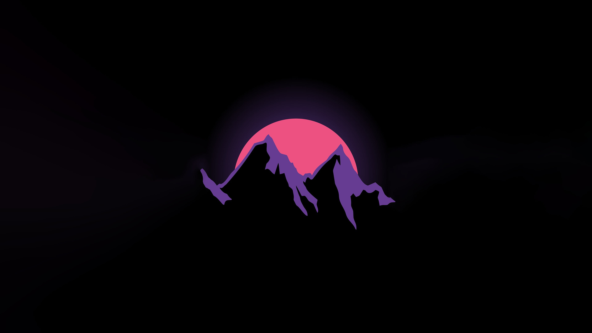
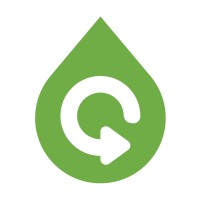
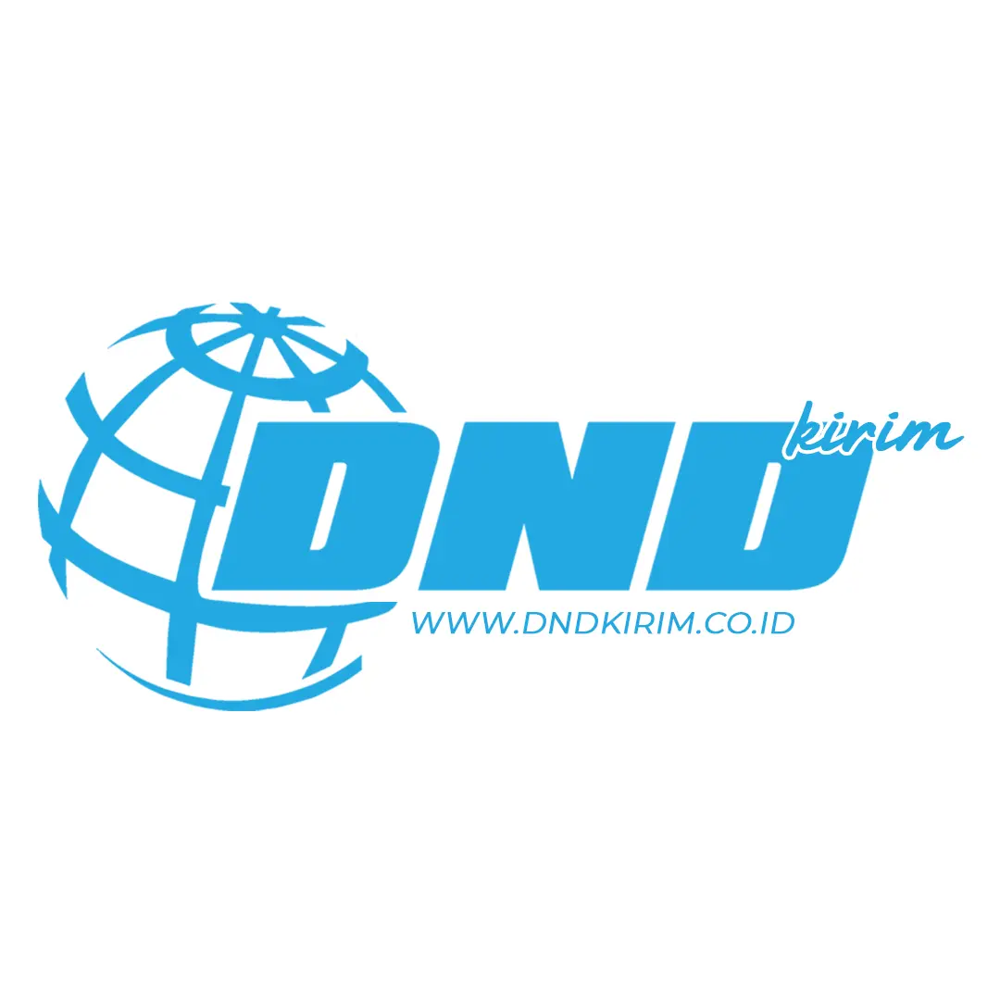
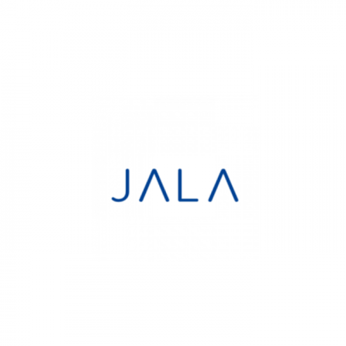

ABOUT ME
As a dedicated Community Engagement Officer with a strong foundation in community development, I have been deeply involved in empowering communities and facilitating meaningful connections between organizations and individuals. My passion lies in utilizing technology and sustainable solutions to create positive social and environmental impacts, particularly in industries like aquaculture and waste management.
Currently, as a Community Engagement Officer at PT Noovoleum Indonesia Investama, I focus on optimizing used cooking oil collection by leveraging AI-based solutions, working directly with local communities to provide incentives and promote sustainable practices.I am committed to fostering innovation, sustainability, and community empowerment, and I am always eager to collaborate with others who share a vision for a more sustainable and inclusive future.
Download CV
EDUCATION
TERBUKA UNIVERSITY
Bachelor Degree
General Management
September 2023 - Present
JENDERAL SOEDIRMAN UNIVERSITY
Associate Degree
Aquaculture
September 2018 - September 2021 (GPA: 3.61/4.00)
EXPERIENCES

noovoleum
Community Engagement Officer
September 2024 - Present

DND Kirim
Business Development
February 2024 - September 2024

JALA Tech
Community Development Executive
January 2023 - October 2023
JALA Tech
Field Assistant
May 2022 - December 2022
CONTACT
DAMAS BAHAGIA IKA CIPTA
Community Engagement Officer | Experienced in Community Development, Empowerment & Digitization | Passionate about Sustainable Solutions and Technology for Positive Impact